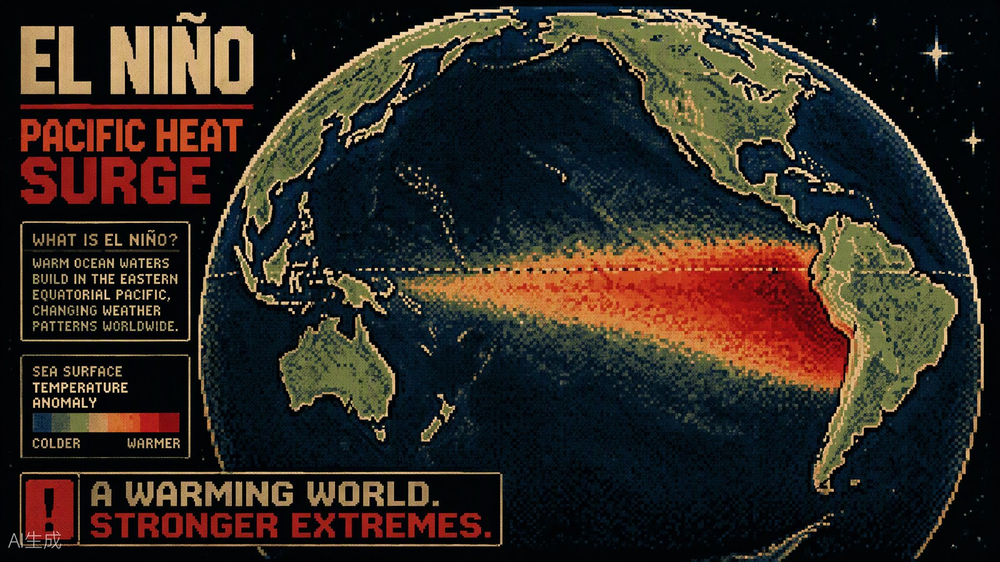
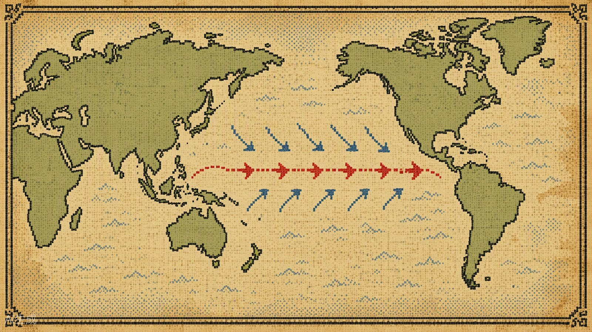
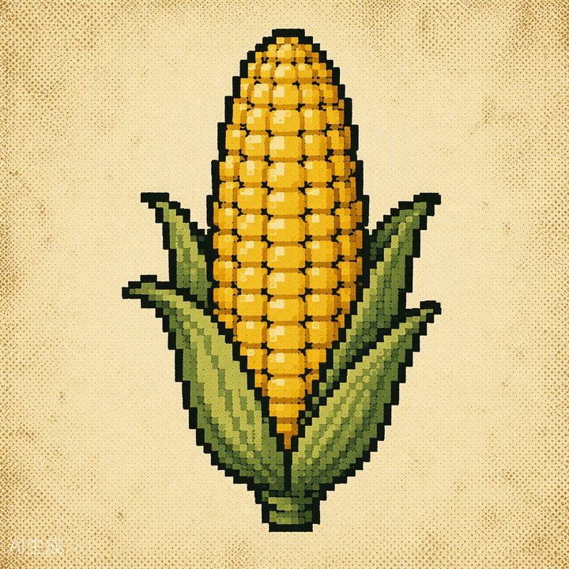
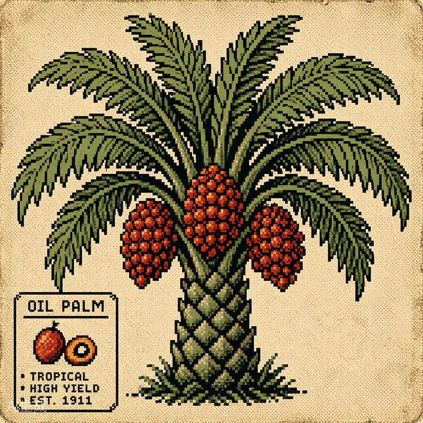
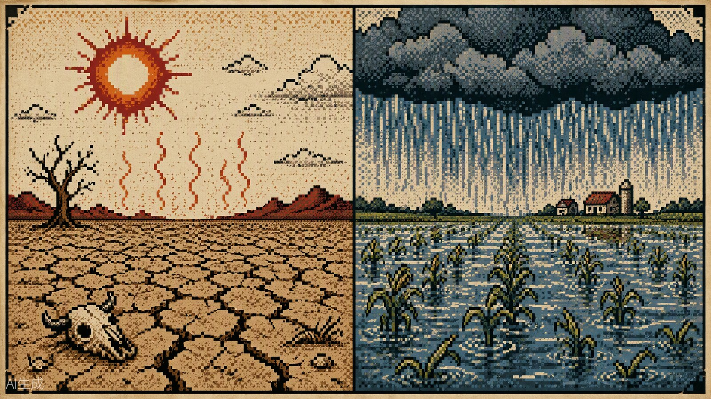
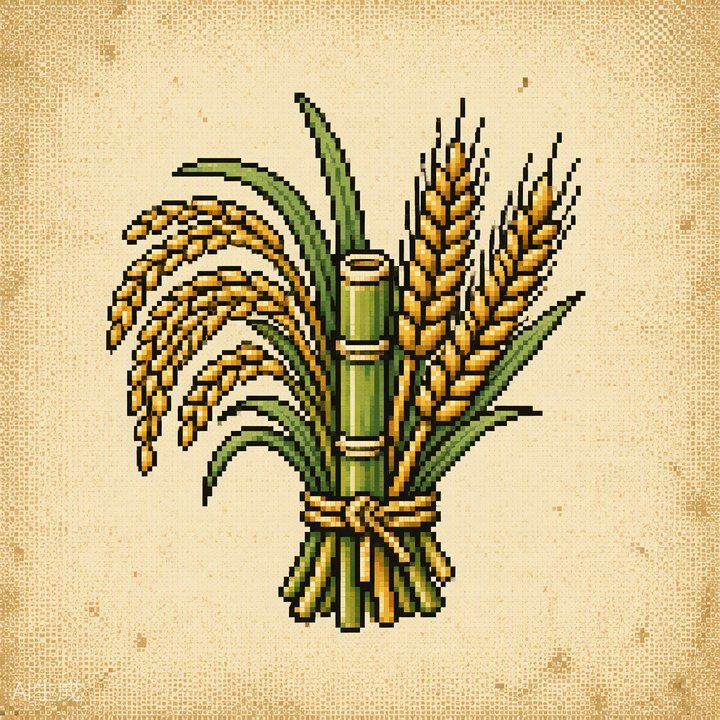

一次有观测记录以来最强的"超强厄尔尼诺"已在二〇二六年九月正式形成。它不只是两至七年一次的冷暖循环——在供需紧平衡、霍尔木兹海峡受限与黑海粮运受阻的时代背景里，这股来自赤道的暖流正在同时改写天气、农田报价单与全球大类资产的定价逻辑。本报综合 NOAA/CPC、国家气候中心、USDA 等一手数据源与公开研究，逐图复现、逐数核实，呈现完整推理链。

赤道中東太平洋的海表温度自2026年5月起快速增暖，7—9月滑动平均值已越过+2.5℃的"超强"门槛。国家气候中心9月29日宣布：一次超强厄尔尼诺事件正式形成，预计11—12月达到峰值，强度大概率刷新1951年有系统监测以来的纪录。世界气象组织10月8日通报：事件持续至2027年2月的可能性接近100%。
厄尔尼诺平均2—7年一次，是气候系统的常客。但这一次它走进了一个不同的世界：全球变暖抬高了海温基数，农产品供需正从宽松切换到紧平衡，地缘冲突掐住了能源与粮食通道。气候变量第一次与库存、油价、航运同时站在天平同侧——周期性事件，产生了结构性的价格后果。
历史三次超强事件中，全球玉米、棕榈油全部减产，大豆大概率增产。据库消比与价格的历史回归测算：库消比每降1个百分点，玉米价格弹性16%—26%、大豆约9%。中性假设下，未来3—6个月CBOT玉米看涨约20%至560美分/蒲式耳、大豆约10%至1300美分、BMD棕榈油约20%至5500林吉特/吨。影响沿"海温→环流→农田→库存→物价→资产"逐级传导。
何谓"超强"。厄尔尼诺是赤道中东太平洋海温异常增暖引发的自然现象，平均2—7年一次、每次持续9—12个月；拉尼娜则是其冷位相镜像。按 NOAA 口径，Niño3.4 区海温距平 ≥+0.5℃ 为厄尔尼诺，≥+1.5℃ 为强，≥+2.0℃ 为"非常强"（very strong）；采用剔除全球变暖背景的相对指数 RONI ≥+2.0℃ 即达"超强"级别。自1950年有系统观测以来，达到这一级别的只有三次：1982/83、1997/98、2015/16。
本轮强在何处。其一，速度快：2026年5月进入厄尔尼诺状态，仅三个月便逼近超强门槛，增暖速率超过1997年与2015年同期。其二，峰值高：国家气候中心监测显示7月海温指数2.09℃、8月2.59℃、9月2.94℃，均为1951年以来历史同期最高；预计11—12月峰值达3.2—3.5℃，将明显超过2014—2016年事件2.8℃的历史最大值。其三，口径交叉验证：NOAA/CPC 10月8日诊断确认"厄尔尼诺持续增强"，秋冬季发展为非常强事件的概率超过90%，其中10—12月 RONI 达到+2.5℃以上（即超越1950年以来全部事件）的概率为75%。
一个必须说明的细节。本轮事件的"破纪录"在不同指数口径下结论不同：传统 ONI（直接海温距平）下，9月单日读数3.11℃已打破2015年纪录；而剔除热带海盆整体增暖的 RONI 口径下，9月中旬约2.5℃，仍低于1982年12月下旬创下的单日最高值。NOAA/CPC 多模型预测显示：本轮峰值 RONI 均值约2.7℃，有望超过历史峰值2.4℃。无论哪种口径，这都是40余年来最强的太平洋增暖事件之一。

传导链条。正常年份热带太平洋"西暖东冷"，沃克环流驱动信风将暖水吹向西太平洋。厄尔尼诺发生时东风减弱甚至逆转，暖水向东回流，热带对流随之东移：东太平洋（南美东南部、秘鲁—厄瓜多尔沿岸）降水明显增强，西太平洋（印尼、马来西亚、澳大利亚东部）干旱特征显著。超强事件相对中等偏弱事件，对流东移的特征更为极端。
对中国的滞后影响。厄尔尼诺对气温的影响存在2—3个月滞后：海温每升高1℃，全球平均地表温度约上升0.07℃。国家气候中心指出，超强事件下中国在"厄尔尼诺衰减并结束的夏季"影响最为显著——预计2027年夏季中东部降水总体偏多，长江中下游暴雨洪涝风险明显上升。历史镜鉴清晰：1982/83、1997/98、2015/16 三次强或超强事件之后的1983、1998、2016年，长江流域均出现明显洪涝。
为何峰值落在冬季最关键。厄尔尼诺强度峰值通常在当年11月至次年1月——恰逢北半球主粮已收获、南半球正值种植生长期。这决定了受冲击最大的不是美国玉米带，而是南美的大豆玉米、东南亚的棕榈橡胶、西非的可可与越南的咖啡。影响的地理分布，本质上由作物的生长日历与峰值时钟的错位决定。


玉米：面积比单产更脆弱。三次超强事件全球玉米全部减产（-0.4% / -3.2% / -3.8%），平均减产2.4%。关键不在单产而在面积：巴西南部多雨洪涝导致玉米无法下种，三次事件中两次造成巴西玉米面积下降17%—18%，巴西平均减产15.6%；阿根廷则因降水受益，两次增产、平均+15.4%。北半球因收获早于峰值，总体影响偏弱——美国两次减产、平均仅-1%，中国仅1997/98年因严重旱灾减产18%。
大豆：南北对冲后的"受益者"。三次超强事件全球大豆两次增产（+8.6% / +19.7% / -1.7%），平均增产14%。机理是产区分布更广：巴西北部干旱与南部多雨形成对冲，巴西两次增产、平均+17%；阿根廷平均增产37.7%；美国因生长期与峰值错峰，两次增产、平均+11.5%。厄尔尼诺对大豆不是免费的午餐，但历史上方向偏多。
棕榈油：三次全部减产的"确定性之王"。印尼与马来西亚合计占全球产量约82%—85%，油棕需要全年均匀降雨，干旱冲击果串形成，且影响滞后9—12个月。三次超强事件下：马来西亚单产全部下降、平均-13%；印尼两次下降、平均-14%；两国加权全球单产平均下降8.4%。AP 9月21日报道，马来西亚总理已责令农业部制定应对预案，预计11月对马来西亚冲击最大。
橡胶与其他作物。橡胶三次超强事件中一次减产、两次单产下降（平均-2.2%），而最近三次中等以上强度事件全部减产——随着泰国产区树龄老化，缓冲能力正在消失。其他作物中：可可（科特迪瓦三次全部减产、平均约-14%）、白糖（印度、泰国三次全部减产；1997/98泰国甘蔗减产22%、纽约原糖上涨58%）历史负向影响最稳定；咖啡分化（巴西三次全部增产、平均+42%；越南两增一减）；小麦、棉花方向不明；水稻威胁在中国次年长江流域的洪涝。
玉米：负相关最强的"粮食锚"。以1990/91至2026/27年度全球（除中国）玉米库消比与 CBOT 结算价对照，两者负相关显著：据历史数据测算，库消比每下降1个百分点，价格弹性区间16%—26%（均值约20%）。2007年美国《能源独立与安全法案》之后，乙醇需求使玉米价格中枢上移约89%，玉米与原油的相关性自此增强——能源属性抬高了整条价格曲线的底座。
大豆：不对称的弹性。大豆同样与库消比负相关，但不对称性更强：库消比见底时（如2012/13、2022/23，布伦特年度均价分别约100、80—90美元/桶），能源属性放大涨幅；库消比见顶时，中国补库与美国可再生燃料掺混义务（EPA 2026年提高2026—27年 RVO 并对境内燃料提供税收抵免）抬升价格底部。近年来库消比每降1个百分点，价格涨幅稳定在约9%。
棕榈油：库消比几乎失灵。1990/91—2026/27年度棕榈油库消比与价格的相关系数仅+0.72（方向甚至为正），解释力让位于两条更强的链：与替代品——2000—2025年 BMD 棕榈油与 CBOT 豆油结算价相关系数高达0.91；与原油——印尼自2006年推进生物燃料政策（从 B2.5 到2026年的 B50），同期棕榈油与布伦特原油相关系数达0.60，2020年后进一步升至0.86。买棕榈油，某种程度上是在买"豆油+原油"的组合。

市场已经给出第一次投票。截至10月9日收盘：CBOT 12月玉米报479.75美分/蒲式耳——注意，10月9日 USDA 月度报告确认美国丰产（产量158亿蒲）后玉米一度触及30美分跌停，说明"美国丰产"已计入价格，而"南美天气"尚未定价；大豆11月合约约1283美分，市场聚焦中国250亿美元采购框架的执行节奏；BMD 棕榈油约4600—4650林吉特/吨，马来西亚9月末库存创下351万吨的纪录高位——短期"弱现实"与远期"强预期"正在拉锯，而这恰是"弱现实逐步修复、强预期进一步抬升"这一判断的最佳注脚。
国内品种的隔离与传导。中国玉米2026/27年度库消比预计51%，库存安全度高，厄尔尼诺对国内玉米产区影响有限；但外盘涨价将抬升进口成本、压缩进口量，边际带动国内小幅去库，价格有望小幅走强。小麦、水稻供应保障充足，受极端天气影响有限；真正的天气风险敞口在2027年夏季的长江流域洪涝与东北积温。内盘棕榈油进口依赖度高，涨幅预计与外盘一致。
| 品种 | 三次超强事件历史表现 | 本轮关键变量 | 方向判断 |
|---|---|---|---|
| 可可 | 科特迪瓦三次均减产、平均约-14%；加纳一降两增；厄瓜多尔三次均降 | 前期供给冲击已推高价格；关注四季度西非干旱与中间季减产兑现 | 高位仍有上行空间 |
| 咖啡 | 巴西三次均增产、平均+42%；越南两增一减（增产年约+4%，减产年-13%） | 阿拉比卡随巴西新豆释放回落；罗布斯塔看越南干旱风险 | 阿拉比卡回落 / 罗布斯塔有支撑 |
| 白糖 | 巴西两增一减（增产年约+9%）；印度、泰国三次均减产 | 9—11月巴西降雨干扰压榨、印度季风偏弱；现实供需仍偏宽松 | 远期有支撑 |
| 棉花 | 美国三次均减产、平均-15.1%；中国两增一减；方向不明 | 美国南部高温干旱支撑短期价格，高价抑制纺织需求 | 高位震荡，空间有限 |
| 小麦 | 历史影响总体偏负；中国两增一减，美国、印度两增一减 | 本季减产风险已基本兑现；黑海物流扰动支撑价格 | 支撑偏强，看下一季 |
| 水稻 | 19次厄尔尼诺期间国际米价11涨（均值+22%）8跌（均值-10%）；中国1983/1998/2016年均现长江洪涝 | 中国本季供给充裕；2027年夏季洪涝减产风险 | 短期受限，远期有风险支撑 |
| 天然橡胶 | 泰国两增一减；印尼产量、单产三次均降；越南三次均增 | 四季度若泰、印尼持续高温干旱，割胶受抑 | 中期有上行空间 |
商品是最直接的一章。农产品内部弹性排序清晰：棕榈油（历史三次超强事件最大涨幅均超100%，1982年达169%）与白糖（2015/16期间 ICE 原糖自10美分涨至23.8美分、涨幅140%）弹性居前，橡胶居中（2015/16最大涨幅108%），玉米大豆受北半球错峰保护、弹性相对温和但有紧平衡加持。工业品的暗线常被忽略：印尼干旱压制水电，威胁其镍矿湿法冶炼；智利、秘鲁（合计约40%全球铜产量）的洪涝可能淹没矿山、中断铜精矿运输。高盛估计本轮厄尔尼诺可能推动全球食品商品价格上涨超过15%。
宏观资产的传导更迂回。食品与能源价格共振意味着通胀下行路径变得颠簸，主要央行降息空间受挤压，债券承压；股票内部剧烈分化——摩根士丹利指出，糖生产商、农资供应商（种子、化肥、农机）、拉美电力板块与美国大型食品零售商受益于高价环境，而巴西禽肉蛋白等"买原料"的企业利润受压；汇率上，拉美货币面临"高利率支撑 vs 增长受损"的双向波动。非洲开发银行警告：本轮事件可能给非洲带来100亿—200亿美元经济损失，受灾最重国家 GDP 或下降1—2个百分点，2026年农业损失可达3.3亿美元、玉米价格或翻倍。
节奏比方向更重要。复盘显示，农产品主升段多在厄尔尼诺达峰之后出现：预期阶段（开始前3—6个月）咖啡、可可先动；发生阶段品种分化；结束阶段（结束后3—6个月）供给冲击兑现，棕榈油进入最强主升段。本轮的时间表：2026年11—12月达峰，2027年春季衰减，2027年夏季迎来对中国的最大考验（长江洪涝）与棕榈油减产的全面兑现。期货通常提前定价预期，但波动极大——逢低参与而非追逐天气头条，是历史给的纪律。
| 国家/地区 | 气候影响 | 核心暴露 | 经济/资产含义 |
|---|---|---|---|
| 中国 | 今冬偏暖；2027年夏季中东部降水偏多，长江中下游暴雨洪涝风险升高 | 水稻（2027洪涝）、小麦播种、内盘油脂进口成本 | 主粮库存充足隔离冲击；进口成本抬升；1998年式洪涝是2027年最大尾部风险 |
| 美国 | 冬季北暖南冷，南部平原降水偏多；中西部夏季相对温和 | 玉米大豆（影响有限）、棉花（南部高温）、天然气（暖冬压制取暖需求） | 丰产 vs 出口需求博弈；农业股分化，农资受益 |
| 巴西 | 北部干旱、南部多雨洪涝 | 玉米（面积风险）、大豆（南北对冲偏多）、甘蔗（多雨干扰压榨）、咖啡（利好） | 农业产出波动加大；蛋白生产商利润受压；货币双向波动 |
| 阿根廷 | 降水偏多 | 大豆（历史平均+37.7%）、玉米（平均+15.4%） | 南美难得的受益方，出口与汇兑收入改善 |
| 印尼 / 马来西亚 | 显著干旱，11月前后冲击最大 | 棕榈油（两国占全球约85%）、橡胶、镍（水电约束冶炼） | 减产滞后9—12个月兑现于2027年；出口收入与通胀压力并存 |
| 印度 / 泰国 | 季风偏弱、干旱概率上升 | 甘蔗（两国历史均三次减产）、水稻、棉花 | 糖价支撑；印度食品通胀与出口政策收紧风险 |
| 西非（科特迪瓦/加纳） | 干旱风险 | 可可（科特迪瓦历史三次均减产、均值-14%） | 可可远期上涨空间；农户收入与财政脆弱性加剧 |
| 秘鲁 / 厄瓜多尔 | 暴雨洪涝（1997/98秘鲁北部降雨超年均16倍） | 渔业（鳀鱼）、铜矿运输、基础设施 | 鱼粉供应冲击饲料链；铜供应扰动 |
| 澳大利亚 | 东部干旱 | 小麦 | 出口减产风险，全球小麦边际收紧 |
| 非洲整体 | 南部、西部长期干旱，东部洪涝 | 玉米（价格或翻倍）、粮食安全 | 损失或达100—200亿美元；气候移民与财政挤出风险 |
| 欧洲 | 秋季偏暖、2027年春季极端天气概率上升；风暴风险 | 能源需求（暖冬）、保险 | 再保险损失上升；山火已是增长最快的极端天气风险 |

风险提示：极端天气风险——厄尔尼诺/拉尼娜发生的时间、区域和结果存在不确定性，可能引发农产品价格阶段性剧烈波动；地缘关系风险——冲突升级若波及关键港口或运输通道将直接阻断农产品跨区域流通，并推升能源与化肥成本；贸易摩擦风险——关税政策反复可能改变全球农产品贸易流格局，加剧区域供需错配。此外，10月9日 USDA 报告显示美国丰产落地曾致玉米触及跌停，提示"预期先行"的天气交易存在回撤风险。
数据来源：NOAA 气候预测中心 ENSO 诊断讨论（2026-10-08）；中国国家气候中心监测公报（2026-09-29 及10月通报）；世界气象组织《全球季节性气候最新通报》（2026-10-08）；USDA WASDE（2026年8/9/10月）；Carbon Brief（2026-09-21）；美联社（2026-09-21）；Trading Economics / USDA AMS 行情（2026-10-09/12）；摩根士丹利（2026-08-12）；高盛（经 AP 转引）；非洲开发银行（经公开报道）；华泰证券、东方证券、平安期货等公开研究。页面中标注"本报测算"的数字均基于上述公开数据整理计算。